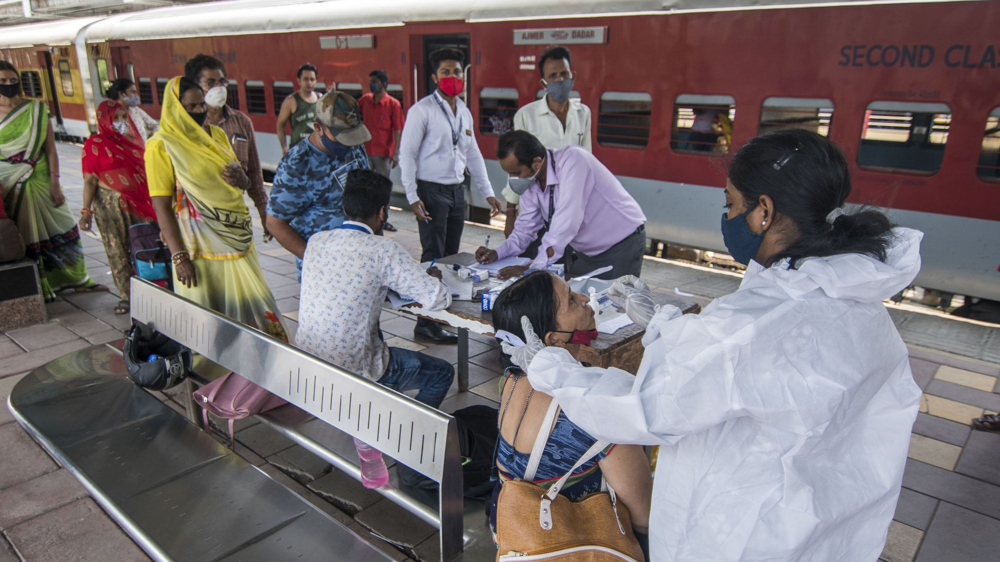

Amazon postpones Prime Day sales in India and Canada over coronavirus surge
India has seen demand for oxygen jump 'seven-fold' as the country set a new world record for daily COVID-19 cases on Thursday, per AP.
By the numbers: India's health ministry reported 412,262 new infections, taking the official tally past 21 million, and 3,980 deaths from the coronavirus in the past 24 hours.The official death toll now stands at 230,168.The actual numbers are believed to be much higher.
Posted On: 2021-05-06T00:00:00
Posted By: Rebecca Falconer
There have been twice as many deaths from COVID-19 around the world as have been reported, according to the University of Washington's Institute for Health Metrics and Evaluation (IHME), which analyzed excess mortality and other factors.
The big picture: The U.S. has undercounted by over 300,000 deaths, while the death tolls in India and Mexico — second and third on the list, respectively — are nearly three times the official numbers, according to the analysis.
Posted On: 2021-05-06T00:00:00
Posted By: Dave Lawler
Posted On: 2021-05-13T22:00:00
Posted By: Axios

Content Date: 2021-05-06
Download Date: 2021-05-15
Document ID: L0C04CEZ4